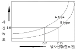
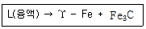
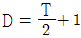
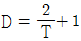
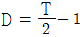
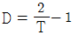

방사선비파괴검사기능사 (2007-04-01 기출문제)
1과목: 방사선투과시험법
1. 비금속 물질의 표면불연속을 비파괴검사를 할 때 다음 중 가장 적합한 시험법은?
- 자분 탐상시험법
- 초음파 탐상시험법
- 침투 탐상시험법
- 중성자 투과시험법
(정답률: 알수없음)

2. 다음 중 자분탐상시험에서 선형자계를 발생하는 자화 방법은?
- 축통전법
- 프로드법
- 극간법
- 전류관통법
(정답률: 40%)
3. 수세성 염색침투탐상검사에 습식 현상제를 사용할 때의 시험순서로 옳은 것은?
- 전처리 → 침투처리 → 제거처리 → 건조처리 → 현상처리 → 관찰
- 전처리 → 침투처리 → 세척처리 → 현상처리 → 건조처리 → 관찰
- 전처리 → 침투처리 → 세척처리 → 유화처리 → 제거처리→ 현상처리 → 건조처리 → 관찰
- 전처리 → 세척처리 → 침투처리 → 현상처리 → 건조처리 → 관찰
(정답률: 알수없음)
4. Ir-192 45Ci 가 25일 경과하면 몇 Ci 가 되는가?
- 15.0Ci
- 22.5Ci
- 35.7Ci
- 42.5Ci
(정답률: 알수없음)
5. 1Ci 의 방사능을 표현한 것으로 잘못된 것은?
- 1Bq
- 103mCi
- 106μCi
- 3.7×1010dps
(정답률: 알수없음)
6. 방사선투과시험의 수동 현상시 가장 좋은 조건의 현상 온도 및 시간은 다음 중 어느 것인가?
- 5℃, 8분
- 20℃, 5분
- 35℃, 8분
- 60℃, 5분
(정답률: 알수없음)
7. X-선투과시험 중 발생장치의 전원이 차단되었다. 조사실에 출입하는 작업자의 행동으로 가장 올바른 것은?
- 조사실에 들어가기 전 수 분 동안 기다렸다. 일반적인 장소와 같은 방법으로 출입하면 된다.
- 조사실에 들어가기 전 면마스크를 착용하고 출입하여야 한다.
- 조사실에 들어가기 전 서베이메터로 방사선의 누설여부를 측정하여야 한다.
- 조사실에 전원이 차단되었으므로 일상적인 장소와 같이 출입하면 된다.
(정답률: 알수없음)
8. 다음 중 감사선 조사장치의 구성 부품이 아닌 것은?
- 원격 제어기
- 조사기 본체
- 고전압 변압기
- 선원 안내 튜브
(정답률: 알수없음)
9. X선관 내부 양극의 표적물질에 대한 설명으로 틀린 것은?
- 원자번호가 높아야 한다.
- 용융 온도가 높아야 한다.
- 열전도성이 좋아야 한다.
- 높은 증기압이어야 한다.
(정답률: 알수없음)
10. 방사선투과사진에서 상의 윤곽이 선명한 정도를 나타내는 용어는 무엇인가?
- 관용도
- 필름 콘트라스트
- 명료도
- 시험체 콘트라스트
(정답률: 알수없음)
11. 방사선투과검사에서 엑스선의 이용보다 감사선의 이용이 갖는 장점으로 틀린 것은?
- 외부 전원이 필요하지 않다.
- X선에 비해 투과 능력이 매우 크다.
- X선에 비해 투과사진의 명료도가 높다.
- 이동성이 좋다.
(정답률: 알수없음)
12. 방사선 조사기에 이용되는 선원으로 동일한 양을 사용했을 때 가장 오랫동안 사용할 수 있는 것은?
- Co-60 선원
- Ir-192 선원
- Tm-170 선원
- Cs-137 선원
(정답률: 알수없음)
13. X선 필름에 직접 닿는 납스크린은 어떤 작용을 하는가?
- 1차 방사선을 가시광선으로 바꾸어 준다.
- 1차 방사선을 강화하고, 산란 방사선의 영향을 감소시켜 준다.
- 1차 방사선보다 파장이 짧은 산란 방사선을 흡수하여 필름을 더 빨리 감광시켜 준다.
- 산란 방사선을 더욱 증사시켜서 큰트라스트를 높이는 작용을 한다.
(정답률: 알수없음)
14. 그래프에서 300mAㆍsec 의 노출조건으로 A타입 필름의 농도가 1.0이 되었다. B타입의 필름으로 사진농도가 1.0이 되려면 노출조건은 약 얼마로 하여야 하는가?

- 1mAㆍsec
- 10mAㆍsec
- 100mAㆍsec
- 1000mAㆍsec
(정답률: 알수없음)
15. 방사선투과시험시 선원과 시험체 사이의 거리를 좁히면 어떻게 되는가?
- 기하학적 불선명도가 커진다.
- 기하학적 불선명도가 작아진다.
- 기하학적 관용도가 좋아진다.
- 기하학적 관용도가 나빠진다.
(정답률: 알수없음)
16. 노출도표에 의한 X선투과 촬영전에 알고 있어야 할 정보가 아닌 것은?
- 시험체의 재질
- 관전압 및 관전류
- 결함의 종류과 크기
- 필름 및 증감지의 종류
(정답률: 알수없음)
17. 방사선투과시험에서 노출도표와 관련하여 등가인자란 무엇을 뜻하는가?
- 철과 비교하여 동일한 노출조건으로 얻을 수 있는 다른 재질의 노출조건을 구할 수 있는 인자.
- 동일한 농도를 얻기 위한 동일 재질의 두께 차이에 따른 노출인자
- 동일한 노출시간에 의해 얻을 수 있는 필름농도의 환산계수
- 동일한 두께의 여러 재질에 따른 노출시간의 비를 나타내는 인자
(정답률: 알수없음)
18. 다음 중 현상처리 과정에서 발생된 인공결함은 어떤 것인가?
- 용액의 의한 줄무늬 (chemical streak)
- 정전기 표시 (static mark)
- 스크린 표시 (screen mark)
- 광선 노출 (light exposure)
(정답률: 알수없음)
19. 방사선투과시험에서 건조처리에 사용되는 계면활성제(wetting agent)의 주된 목적은?
- 주름살의 억제
- 농도 변화의 억제
- 망상 주름의 방지
- 물방울 자국의 방지
(정답률: 알수없음)
20. 기하학적 불선명도와 관련하여 좋은 식별도를 얻기 위한 조건으로 틀린 것은?
- 선원의 크기가 작은 X선 장치를 사용한다.
- 필름과 시험체사이의 거리를 가능한 한 멀리한다.
- 선원-시험체사이의 거리를 가능한 한 멀리한다.
- 초점을 시험체의 수직 중심선상에 정확히 놓는다.
(정답률: 알수없음)
2과목: 방사선안전관리 관련규격
21. 다음 중 방사선투과시험에서 동일한 결함임에도 불구하고 조사 방향에 따라 식별하는데 가장 어려운 결함은 어느 것인가?
- 원형기공
- 균열
- 개재물
- 용입불량
(정답률: 알수없음)
22. Ir-192 1Ci가 내장된 감사선 조사기로 노출시간 30초, 선원-필름사이의 거리를 30cm로 했을 때 양질의 투과사진을 얻었다. 선원-필름사이의 거리를 60cm로 했을때 같은 상질의 사진을 얻기 위한 노출시간은 몇 초로 하여야 하는가?
- 22초
- 78초
- 92초
- 120초
(정답률: 알수없음)
23. 다음 중 방사선이 갖고 있는 성질이 아닌 것은?
- 형광작용
- 사진작용
- 전리작용
- 증착작용
(정답률: 알수없음)
24. 비파괴검사법과 시험원리가 틀리게 짝지어진 것은?
- 방사선투과검사 - 투과성
- 와전류탐상검사 - 전자유도작용
- 자분탐상검사 - 자분의 침투력
- 초음파탐상검사 - 펄스반사법
(정답률: 알수없음)
25. 초음파탐상검사의 근거리 음장에 대한 설명으로 잘못된 것은?
- 근거리 음장은 진동수 직경이 크면 길어진다.
- 근거리 음장은 주파수가 높으면 짧아진다.
- 근거리 음장은 초음파 속도가 빠르면 짧아진다.
- 근거리 음장은 초음파의 파장이 길면 짧아진다.
(정답률: 알수없음)
26. 원자력법령에서 규정한 일반인에 대한 방사선의 연간 유효선량한도는?
- 10mSv
- 5mSv
- 1mSv
- 0.5mSv
(정답률: 알수없음)
27. 1dps(disintegration per second)와 같은 크기인 것은?
- 1μCi
- 1Bq
- 1Gy
- 1Sv
(정답률: 알수없음)
28. 방사선투과시험시 사용되는 콜리메타는 방사선의 차폐역할을 한다. 반경이 0.5인치인 납콜리메타와 우라늄 콜리메타가 있을 때 Ir-192 에 대한 차폐효과는 어느쪽이 얼마만큼 좋은가? (단, 0.5인치인 납과 우라늄에의 투과율은 각각 0.096. 0.012이다.)
- 납이 4배 좋음
- 우라늄이 4배 좋음
- 납이 8배 좋은
- 우라늄이 8배 좋음
(정답률: 알수없음)
29. 감사선 차폐를 위한 차폐체로서 같은 두께의 물질을 사용할 때 다음 중 가장 효과적인 것은?
- Fe
- Ir
- Pb
- Ag
(정답률: 알수없음)
30. 방사선구역 수시 출입자 및 운반종사자의 손, 발에대한 년간 등가선량한도(mSv)로 올바른 것은?
- 10
- 15
- 30
- 50
(정답률: 알수없음)
31. 강용접 이음부의 방사선투과 시험방법(KS B 0845)에서 두께 4mm 강판 맞대기 용접부의 투과사진에서 상질의 종류가 B급일 때 식별되어야 할 투과도계의 식별 최소 선지름은 얼마인가?
- 0.08mm
- 0.10mm
- 0.32mm
- 0.08mm
(정답률: 알수없음)
32. 강용접 이음부의 방사선투과 시험방법(KS B 0845)에서 강판 촬영시 일반적인 계조계의 위치로 올바른 것은?
- 모재부 선원측 투과도계 바로 밑에 놓는다.
- 모재부 필름쪽 면과 필름 사이에 놓는다.
- 카세트 바로 밑에 놓는다.
- 시험부 선원측 투과도계 바로 위에 놓는다.
(정답률: 46%)
33. 강용접 이음부의 방사선투과 시험방법(KS B 0845)에서 두께 25mm 강판 맞대기 용접 이음부의 촬영시 투과도계를 중앙에 1개만 놓아도 되는 규정은 어떤 경우인가?
- 시험부의 유효길이가 두께의 4배(100mm) 이하인 때
- 시험부의 유효길이가 두께의 6배(150mm) 이하인 때
- 시험부의 유효길이가 투과도계 나비의 3배 이하인 때
- 시험부의 유효길이가 투과도계 나비의 4배 이하인 때
(정답률: 알수없음)
34. 주강품의 방사선투과 시험방법(KS D 0227)에서 투과도계를 시험부 선원 쪽 면위에 놓기가 곤란한 경우 시험부의 필름 쪽 면에 밀착시켜 촬영할 수 있다. 이 경우의 투과도계와 필름 사이의 거리 규정으로 맞는 것은?
- 투과도계 식별 최소 선지름의 10배 이상
- 투과도계 식별 최소 선지름의 5배 이상
- 투과도계 식별 최소 선지름의 2배 이상
- 투과도계 식별 최소 선지름의 1배 이상
(정답률: 37%)
35. 강용접 이음부의 방사선투과 시험방법(KS B 0845)에서 강관원둘레용접 이음부의 투과사진에 대한 상질 P1급의 농도범위로 맞는 것은?
- 0.5 이상 4.0 이하
- 0.8 이상 4.5 이하
- 1.0 이상 4.0 이하
- 1.5 이상 4.5 이하
(정답률: 알수없음)
36. 알루미늄 평판 접한 용접부의 방사선투과 시험방법(KS D 0242)의 촬영배치에서 방사선원과 투과도계 사이의 거리는 시험부의 유효길이의 n배 이상으로 하도록 규정하고 있다. 상질이 A급일 때 n의 상수 값은 얼마인가?
- 2
- 3
- 4
- 5
(정답률: 알수없음)
37. 강용접 이음부의 방사선투과 시험방법(KS B 0845)으로 투과사진에 의한 종별 분류시 제 1종 인지 제 2종 인지 구별이 곤란한 결함에 대해서는 어떻게 판정하는가?
- 제1종의 결함분류가 더 엄격하므로 제1종 결함으로 분류한다.
- 제2종의 결함분류가 더 엄격하므로 제2종 결함으로 분류한다.
- 제1종 결함 또는 제2종 결함으로 각각 분류하고, 그 중 분류번호가 큰 쪽을 채택한다.
- 제1종 결함 또는 제2종 결함으로 각각 분류하고, 그 중 분류번호가 큰 쪽보다 한 등급 올려 평가한다.
(정답률: 알수없음)
38. 강용접 이음부의 방사선투과 시험방법(KS B 0845)에서 모재두께 60mm 인 강판 촬영에 대한 결함의 분류시, 제1종 결함이 1개인 경우 결함점수는 결함의 긴 지름 치수로 구하는데 긴 지름이 얼마 이하일 때 결함점수로 산정하지 않는 다고 규정하고 있는가?
- 모재 두께의 1.0%
- 모재 두께의 1.4%
- 모재 두께의 2.0%
- 모재 두께의 2.8%
(정답률: 알수없음)
39. 주강품의 방사선투과 시험방법(KS D 0227)에 규정한 흠의 종류가 아닌 것은?
- 블로홀
- 슈링키지
- 융합부족
- 갈라짐
(정답률: 알수없음)
40. 다음 중 조사선량의 단위로 올바른 것은?
- 큐리(Ci)
- 시버트(Sv)
- 그레이(Gy)
- 렌트겐(R)
(정답률: 40%)
3과목: 금속재료일반 및 용접 일반
41. 다음 중 시스템 소프트웨어에 해당하지 않는 것은?
- UNIX
- Compiler
- LINUX
- Browser
(정답률: 알수없음)
42. 다음 중 인터넷을 사용할 때 영문으로 표현된 도메인 이름을 컴퓨터가 가지고 있는 IP주소로 변환시켜 주는 것은?
- DTS
- DNT
- DNS
- DNP
(정답률: 알수없음)
43. 인터넷에서 사용되는 파일 전송 프로토콜은?
- FTP
- NIC
- HTML
- XML
(정답률: 알수없음)
44. 일반적으로 HTML에서 ID, 패스워드 등을 입력받아 처리하기 위해 많이 사용되는 태그(tag)는?
- Form
- Table
- Body
- Frame
(정답률: 19%)
45. 다음 중 기업과 개인 간의 전자 상거래를 의미하는 것은?
- B2B
- B2G
- C2G
- B2C
(정답률: 알수없음)
46. 시편의 표점간 거리 100mm, 직경 16mm, 최대하중 5800Kgf 에서 절단되었을 때 늘어난 길이가 18mm라 하면 이 때의 연신율(%)은?
- 15
- 18
- 25
- 30
(정답률: 알수없음)
47. 다음 중 탄소함유량(%)이 가장 많은 것은?
- 순철
- 공정주철
- 아공석강
- 공석강
(정답률: 알수없음)
48. 절삭공구용으로 사용되고 있는 18-4-1형 고속도 공구강의 주성분은?
- 텅스텐(W) - 몰리브덴(Mo) - 아연(Zn)
- 텅스텐(W) - 바나듐(V) - 베릴륨(Be)
- 텅스텐(W) - 크롬(Cr) - 바나듐(V)
- 텅스텐(W) - 알루미늄(Al) - 코발트(Co)
(정답률: 알수없음)
49. 다음 중 6:4 황동으로 상온에서 α+β 조직을 갖는 재료는?
- 하이텔로이
- 퍼말로이
- 문쯔메탈
- 코엘린바
(정답률: 알수없음)
50. 니켈에 약 50~60% 의 구리를 첨가하여 표준 저항선이나 전열선으로 사용되는 합금은?
- 콘스탄탄
- 모넬메탈
- 엘린바
- 플래티나이트
(정답률: 알수없음)
51. 다음 중 소결 초경합금의 금속탄화물이 아닌 것은?
- WC
- TIC
- TaC
- MnO
(정답률: 알수없음)
52. 다이캐스팅용 알루미늄 합금의 요구조건이 아닌 것은?
- 유동성이 좋을 것
- 열간 메짐성이 클 것
- 금형에 점착되지 않을 것
- 응고 수축에 대한 용탕보급성이 좋을 것
(정답률: 알수없음)
53. 면심입방격자(FCC)의 단위격자 안에는 몇 개의 원자가 있는가?
- 2
- 3
- 4
- 6
(정답률: 알수없음)
54. 순철에서 일어나는 동소변태(A3, A4 변태)에서 결정구조의 변화 과정으로 옳은 것은?
- BCC → FCC → BCC
- FCC → BCC → FCC
- BCC → HCP → FCC
- FCC → BCC → HCP
(정답률: 알수없음)
55. Fe-C 2원합금에서 다음의 반응으로 옳은 것은?

- 공석반응
- 포정반응
- 공정반응
- 포석반응
(정답률: 알수없음)
56. 황동의 가공재, 특히 관, 봉 등에서 일종의 응력부식균열로 잔류응력에 기인되어 나타나는 현상은?
- 탈아연부식균열
- 자연균열
- 편정반응균열
- 고온탈아연부식균열
(정답률: 알수없음)
57. 다음 중 열과 전기의 전도율의 가종 좋은 금속은?
- Cu
- Al
- Ag
- Au
(정답률: 알수없음)
58. 용접 후 잔류응력이 제품에 미치는 영향으로 다음 중 가장 중요한 것은?
- 언더컷이 생긴다.
- 용입 부족이 된다.
- 용착 불량이 생긴다.
- 변형과 균열이 생긴다.
(정답률: 알수없음)
59. 직류 아크 용접에 대한 설명 중 옳은 것은?
- 용접봉을 음(-)극에 연결시킨 것을 역극성이라 한다.
- 정극성일 때 비드 폭이 넓어진다.
- 역극성일 때는 모재의 용입이 깊어진다.
- 정극성일 때는 용접봉의 용융이 늦어진다.
(정답률: 알수없음)
60. 가스 용접에서 용접봉과 모재와의 관계식으로 올바른 것은? (단, T: 모재의 두께[1mm이상], D: 용접봉의 지름)




(정답률: 알수없음)